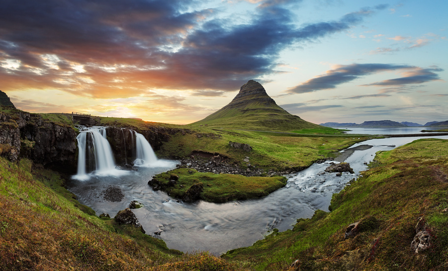
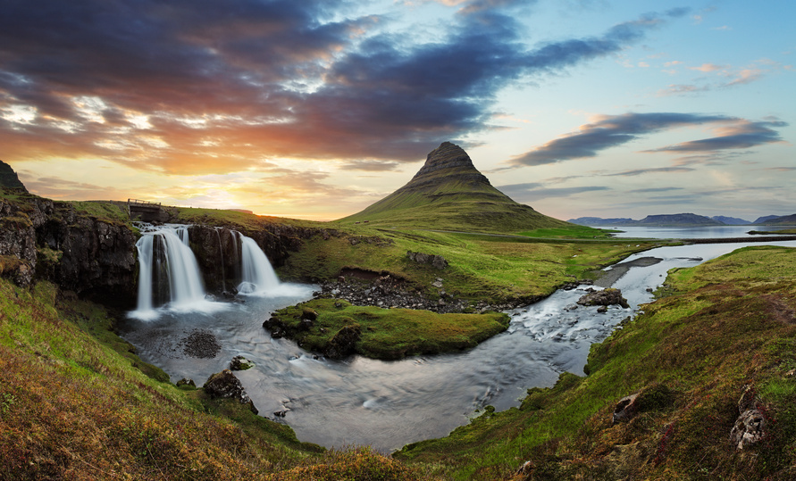

Islandia
|  |  |
 |
 |
|  | |
|
|
Islandia to państwo położone w Europie Północnej, na wyspie Islandia i kilku mniejszych wyspach. Stolicą państwa jest Reykjavík. Islandia jest jednym z krajów nordyckich.
Islandia jest krajem niezwykle ciekawym dla turystów. Wyspę odwiedza około 1 mln osób z zagranicy rocznie. Liczba odwiedzajacych jest ograniczana, aby nie zniszczyć naturalnego piękna kraju, objętego ochroną poprzez utworzenie Parku Narodowego Vatnajökull.
Islandia leży na granicy Oceanu Arktycznego i Atlantyckiego. Głównym miastem państwa jest jego stolica Reykjavík, gdzie mieszka 119,1 tys. mieszk., czyli blisko 2/5 ludności kraju.